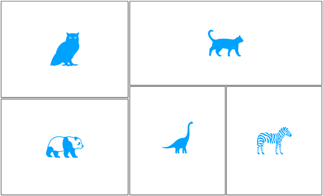

The OpenMR Benelux 2020
Are you working or studying at a university in Belgium, The Netherlands, or Luxembourg in the field of magnetic resonance in medicine? Interested in learning about open science practices and tools and how to apply them in your research? Want to meet likeminded students and researchers and discuss challenges and ideas? If you answered yes to any of these questions, you can check our goals, mission and plans for the OpenMR Seminar 2020.

Why OpenMR?
We aim to create a community-driven open forum for people working in MRI research to learn about and discuss open science practices, with the focus of working together on implementable solutions, whether in the form of a software toolbox, a process description, a community project, or a knowledge-sharing initiative. Open discussion is central to our event, therefore, an open mind attitude and readiness to participate is essential. Interested on the organization? Meet the Team.
In 2019, the first edition of the OpenMR Benelux was a blast! You can check the last year’s program, speakers and more at OpenMR Benelux 2019.

It is super easy to register!
The next OpenMR Benelux will happen in January 2020, in the beautiful city of Leiden, in The Netherlands. The event will last for 2 days, with amazing talks, discussion panels and demonstration of exciting projects. Register here, it takes 2 minutes!
Check out what we are preparing for you
We are working hard to bring you the latests developments in Open Science through talks, discussion rounds and an amazing after-work! We believe that the core of the event is participation, so we are preparing exciting workshops for you to explore cutting edge open-softwares and collaboration tools. Check the OpenMR Seminar program and its speakers!